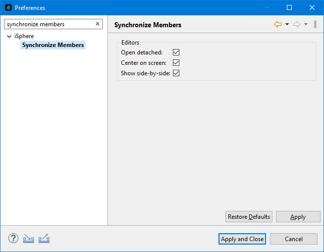

The available options for synchronizing source members are:
| Open detached | - | Specifies
whether the editors for editing or viewing source members are opened as detached
editors. If this option is selected, editors are opened in a separate popup window. |
| Center on screen | - | Specifies whether editors for editing or viewing source members are centered on the screen. If this option is selected, editors are centered on the screen; otherwise editors are centered on the application window. |
| Show side-by-side | - | Specifies whether editors for editing or viewing source members are displayed side-by-side. If this option is selected, the editor displaying the left member is shown next to the editor displaying the right member. |